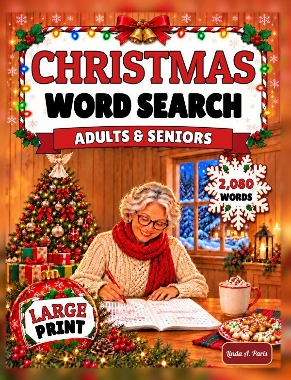
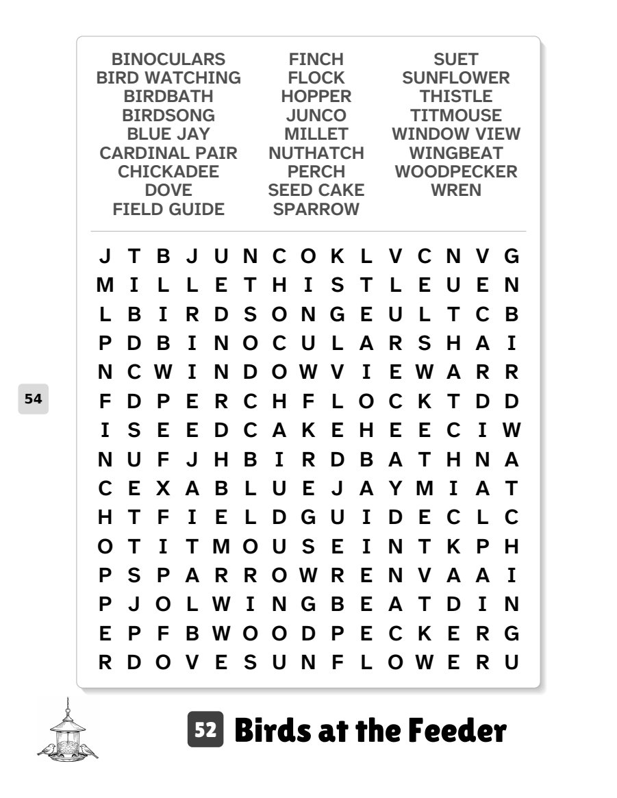
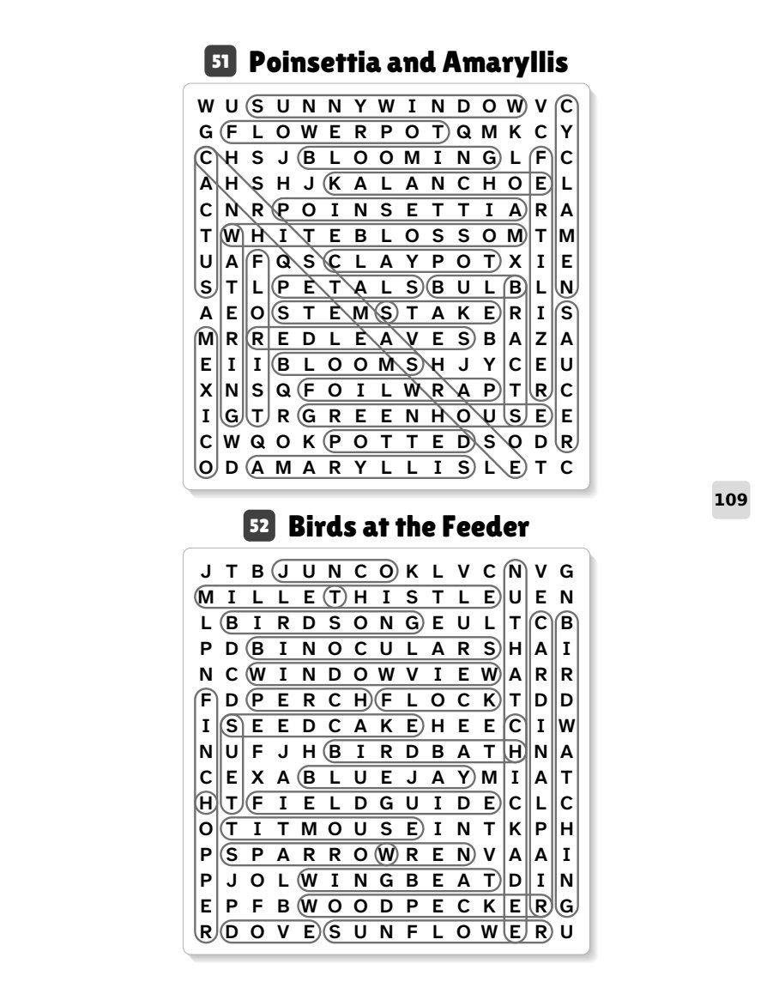

Looking for the answers?
All 80 answers, as full-size pages you can print.

Christmas Word Search: Adults & Seniors
by Linda A. Paris
- 80 puzzles, one per page
- 2,080 words to find
- 20-point puzzle letters
- 15 × 15 grids
- Every answer printed in the back
- 126 pages · 8.5 × 11 in paperback
About this book
Pour a cup of tea and settle in with 80 holiday word searches: 2,080 words and phrases on 15 x 15 puzzle grids in big, bold 20-point letters, one puzzle per page, each with its own little holiday picture.
No search entry is repeated anywhere in the book. Words run left to right, top to bottom, or diagonally down. Nothing is backwards.
Themes include bubble lights and the aluminum tree, fudge and divinity, Silent Night and the First Noel, the Quilting Bee, Birds at the Feeder, A Christmas Carol, Tea Time and New Year Wishes.
Word lists are in alphabetical order above each grid, and every answer is printed at the back of the book.
Look inside


The answer pages are also printed at the back of the book. They are free to view and print for your own use.